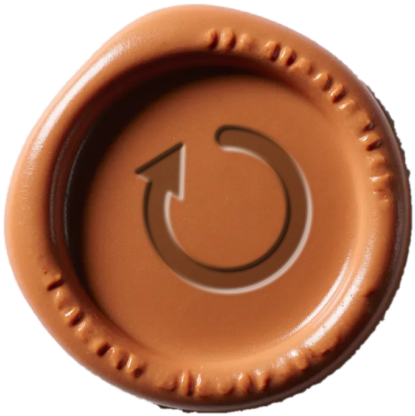

Open Claude Code
in your project,
then type
in your project,
then type
/jeffy
10 iterations, full-spectrum improvement
/jeffy 5
5 iterations
/jeffy 12 accessibility and performance
12 iterations with a focus directive
/jeffy 5 --highs
High hunt: find and fix only the Highs
/jeffy 10 --max-time 2h
10 iterations, but stop after two hours either way